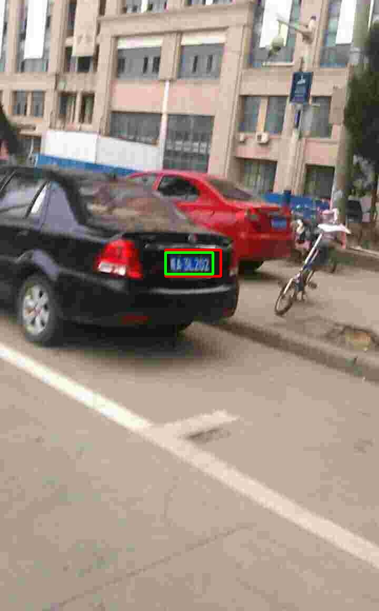
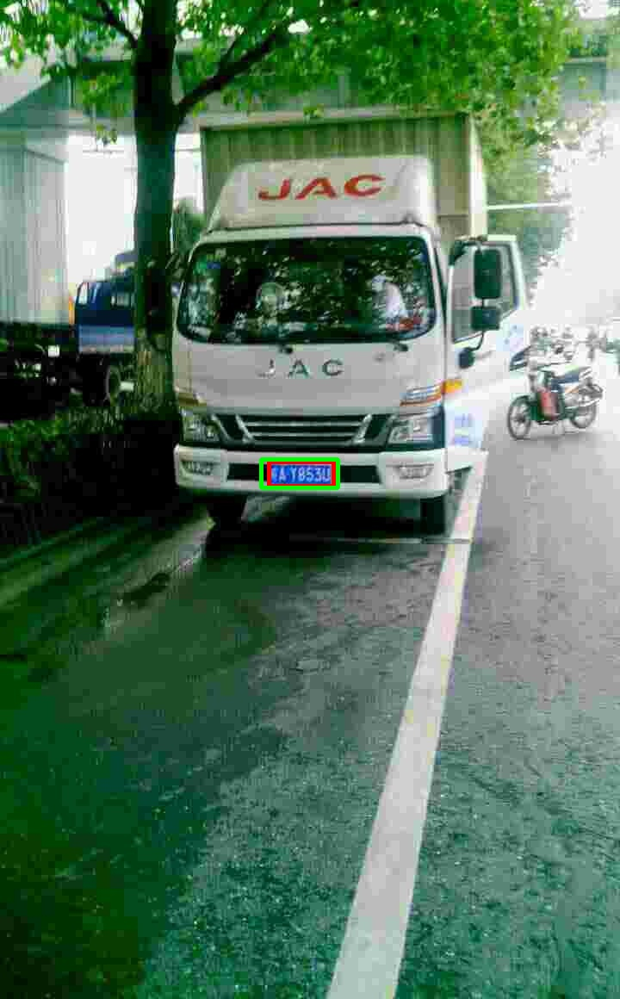
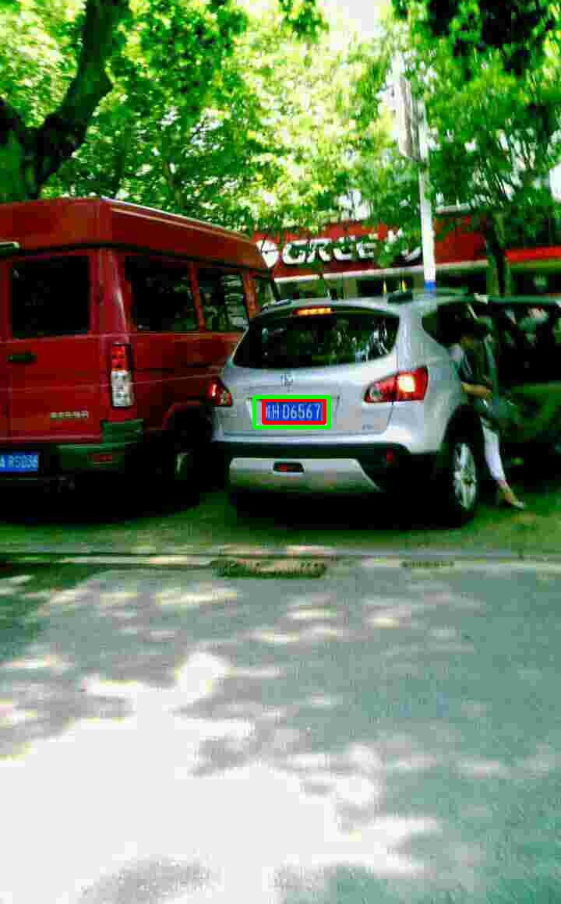
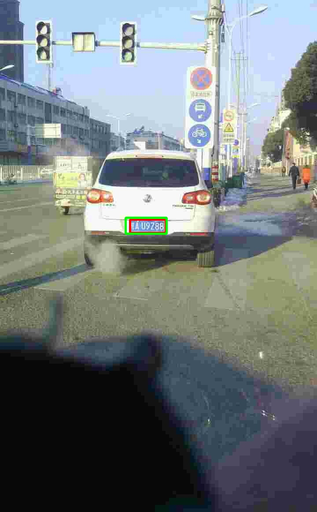
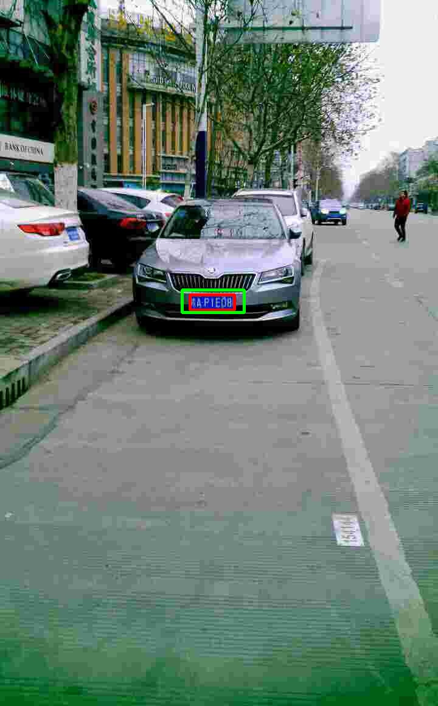
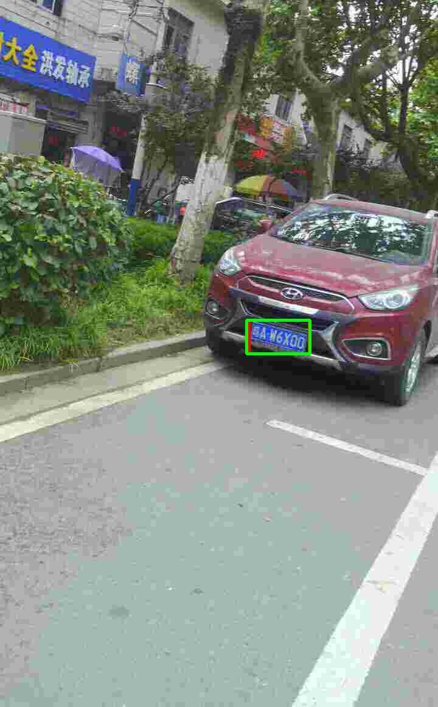
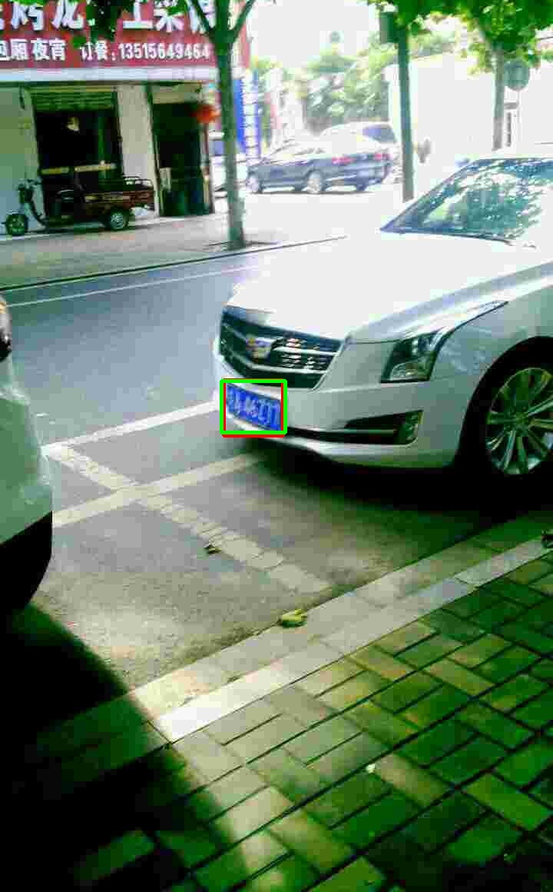
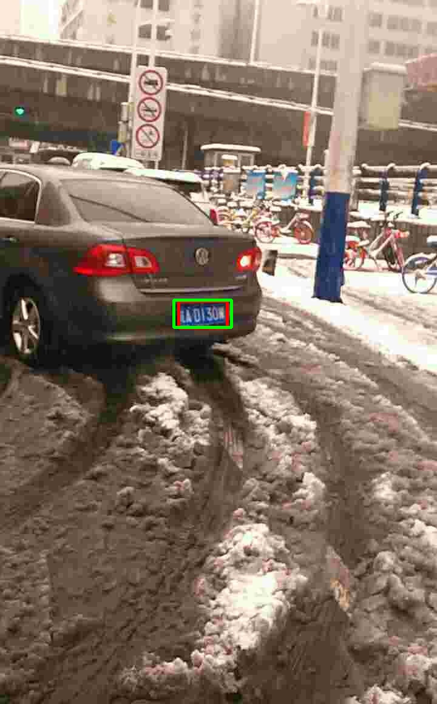
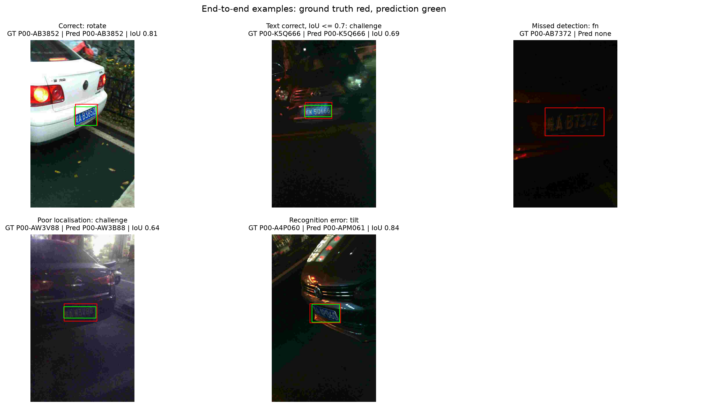

Course group project · CCPD2019 · YOLOv8n + seven-head residual CNN
Haoqing Gu · Junwen Xue · Zezheng Yu · Ye Li · Xiaoyang Chen
车牌检测与识别小组项目：从文件名标注解析、数据检查到模型训练、分场景评测及端到端错误分析。
Read project report · Setup and directory guide · Metric definitions
YOLOv8n finds the plate, then a residual CNN predicts all seven characters from the crop. The fixed split uses 30,000 training, 5,000 validation and 10,000 test images. This is a selected-data experiment, not the full CCPD benchmark. All values below are saved group experiment results.
| Subset | Images | Detector accuracy IoU > 0.7, conf 0.001 | Recognition exact ground-truth crops | Strict pipeline accuracy conf 0.25 |
|---|---|---|---|---|
| base | 3000 | 99.20% | 98.67% | 98.17% |
| blur | 1000 | 82.20% | 36.00% | 28.80% |
| challenge | 1000 | 91.80% | 53.50% | 49.10% |
| db | 1000 | 68.00% | 45.10% | 34.60% |
| fn | 1000 | 82.20% | 54.40% | 51.90% |
| rotate | 1000 | 95.60% | 55.90% | 59.40% |
| tilt | 1000 | 89.00% | 41.20% | 49.90% |
| weather | 1000 | 98.80% | 96.50% | 95.30% |
Overall pipeline exact-plate accuracy is 70.41%; strict accuracy additionally requires correct localisation. Detection confidence settings differ between detector-only and combined evaluation. Speed was recorded on an RTX 3060 Laptop GPU; see the evaluation notes for batching and timing conditions.
Clear Base and Weather cases perform well. Blur and difficult lighting or perspective reduce recognition accuracy considerably. Error analysis separates missing detections, poor localisation and incorrect character predictions, identifying recognition as the principal bottleneck.
Ground-truth boxes are red; detector predictions are green.









Full workflow notebook, detector scripts, final detection and recognition checkpoints, fixed split lists, metadata, detailed predictions, training histories and original report. Raw CCPD2019 images are external. Open the overview and report without installing any ML dependencies; rerunning the notebook requires the dataset and Python environment.
The report is a course report in conference style, not a claim of IEEE publication. Team authorship and source measurements are preserved.